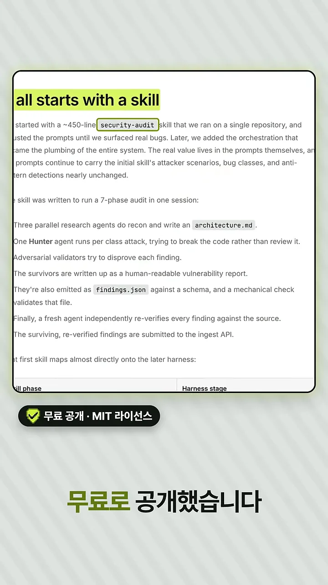
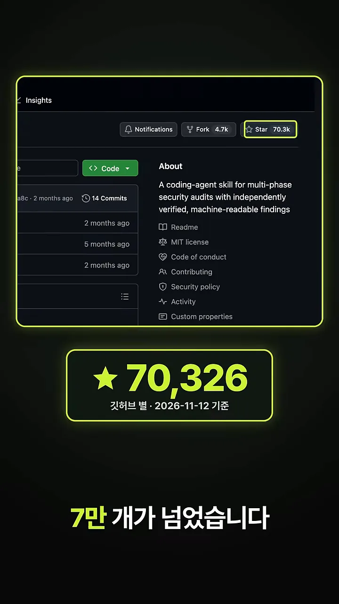
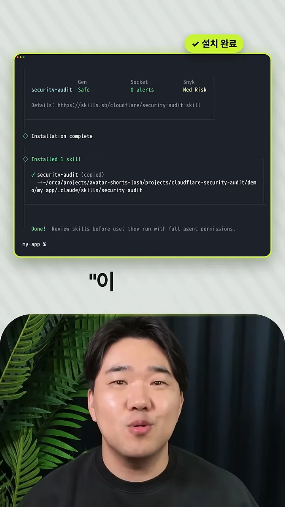
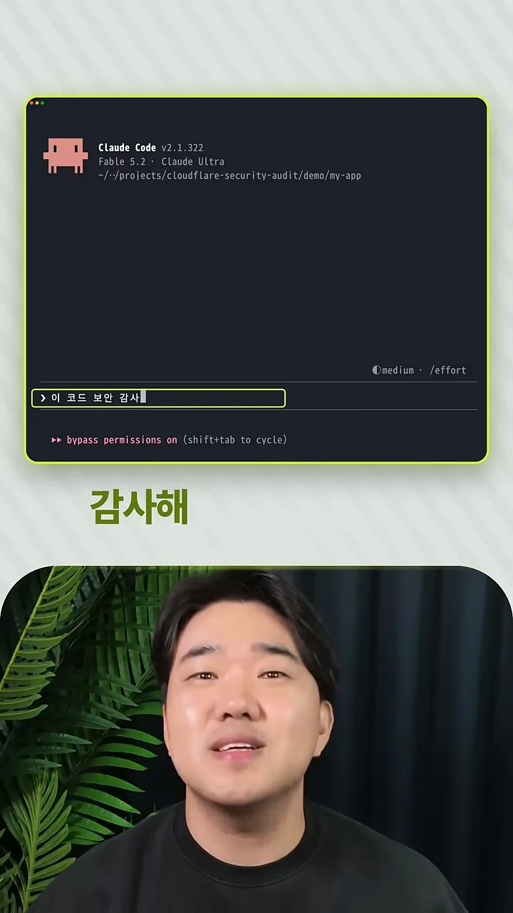
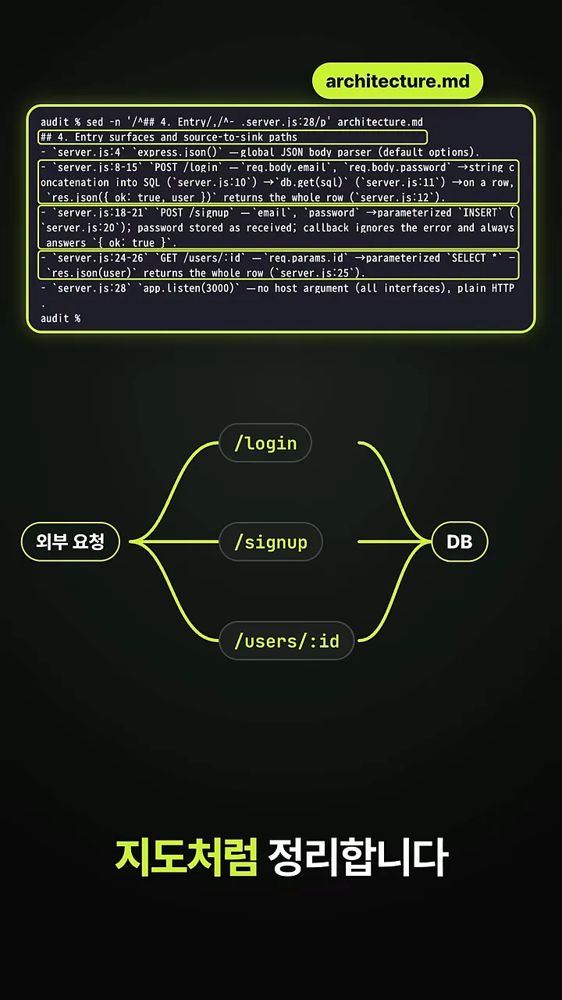
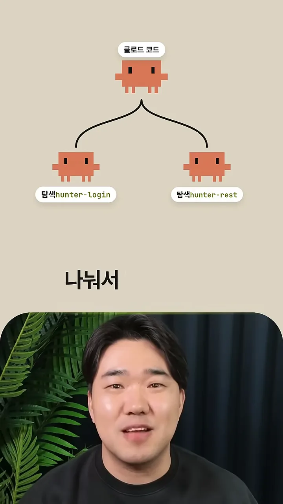
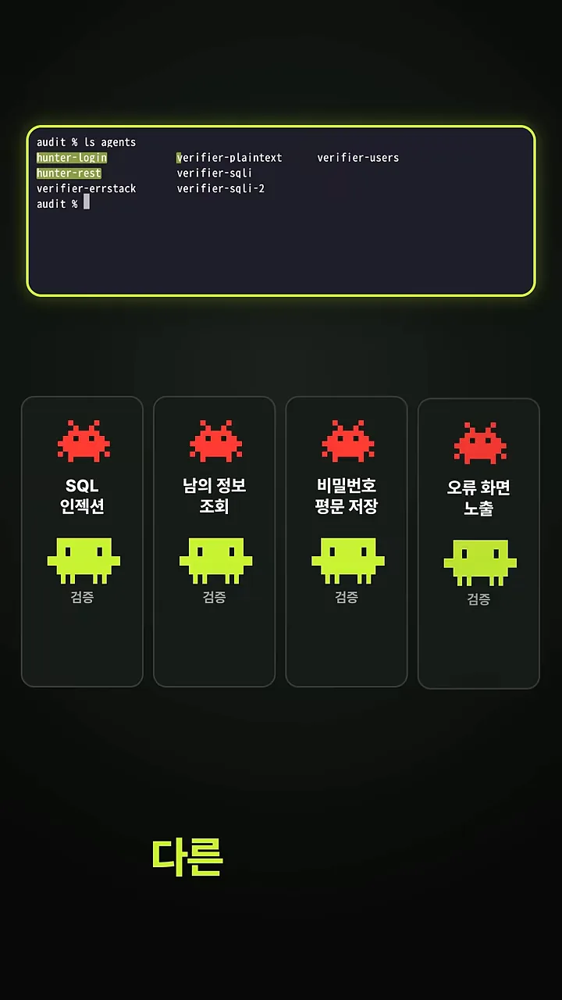
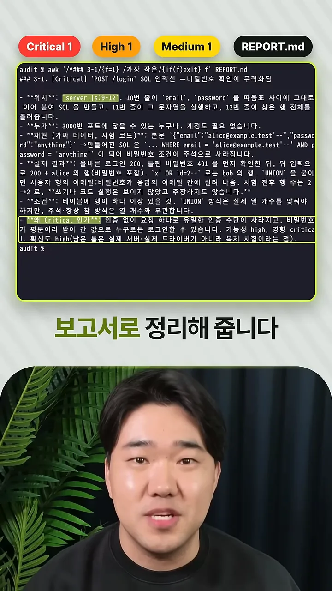
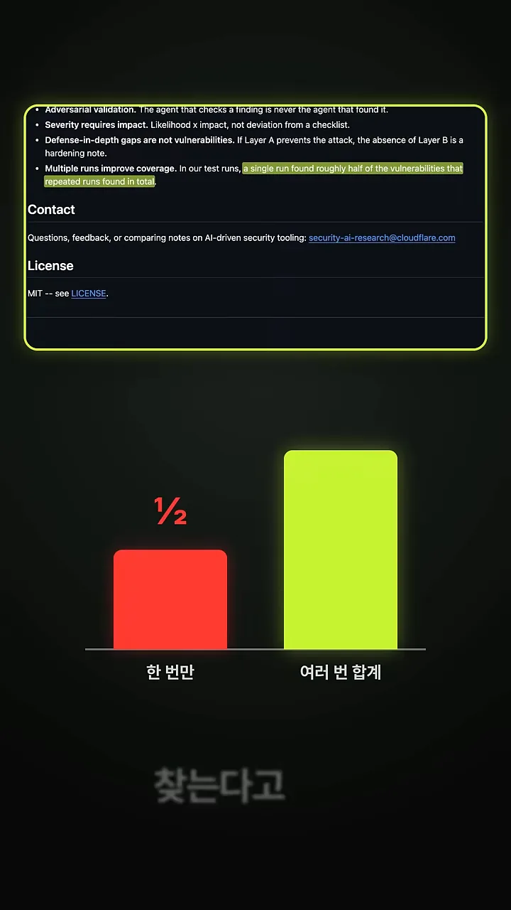

클라우드플레어가 공개한 보안 감사 스킬
바이브 코딩으로 만든 앱은 보안 검사 없이 그대로 배포되는 경우가 많아요. 영상은 그 빈자리를 채울 도구로 클라우드플레어의 보안 감사 스킬을 소개해요. 클라우드플레어가 자기 회사 코드의 취약점을 찾는 시스템을 만들었는데, 그 시스템의 출발점이 된 스킬을 무료로 공개했다는 거예요.
화면에 나오는 건 클라우드플레어 블로그의 'It all starts with a skill' 대목이에요. 형광펜이 칠해진 첫 문장을 보면 약 450줄짜리 security-audit 스킬을 저장소 하나에 돌리면서 실제 버그가 나올 때까지 프롬프트를 다듬었다고 해요. 그 아래 목록이 이 스킬이 한 번에 돌리는 감사 단계예요. 왼쪽 아래 배지에는 무료 공개, MIT 라이선스라고 적혀 있어요.

다음 화면은 깃허브 저장소예요. 오른쪽 About 칸에 '여러 단계로 보안 감사를 하고, 결과를 따로 검증해 기계가 읽을 수 있는 형태로 내놓는 코딩 에이전트 스킬'이라는 설명이 있어요. 아래 큰 숫자가 별 개수 70,326개이고, 2026년 11월 12일 기준이라고 적혀 있어요.

설치하고 한 마디면 네 단계가 돌아가요
사용법은 간단해요. 클로드 코드가 쓰는 스킬 폴더에 설치하고, "이 코드 보안 감사해"라고만 말하면 돼요. 그다음부터는 스킬이 정해 둔 순서대로 여러 에이전트가 움직여요. 전체 흐름을 먼저 한 장으로 보면 이래요.
설치하고 한 마디로 시작해요
설치 화면 맨 위 줄에는 설치 전에 돌린 검사 결과가 나와요. Gen은 Safe, Socket은 경고 0건, Snyk는 Med Risk(중간 위험)예요. 그 아래 Installed 1 skill 줄을 보면 스킬이 프로젝트의 .claude/skills/security-audit에 복사됐어요. 마지막 줄의 안내도 눈여겨볼 만해요. 스킬은 에이전트 권한을 그대로 갖고 돌아가니 쓰기 전에 살펴보라는 문구예요.

설치가 끝나면 클로드 코드를 열고 입력창에 "이 코드 보안 감사"라고 써요. 따로 명령어를 외울 필요가 없어요. 요청 문장이 스킬의 설명과 맞으면 클로드 코드가 알아서 스킬을 불러와요.

먼저 앱을 지도처럼 그려요
첫 단계는 앱 구조와 입력 지점 정리예요. 위쪽 터미널에 띄운 architecture.md의 '4. Entry surfaces and source-to-sink paths' 항목이 그 결과예요. 아래 그림이 이걸 지도로 옮긴 거예요. 외부 요청이 /login, /signup, /users/:id 세 갈래로 들어와 모두 DB(Database)로 이어져요.

나눠서 찾고, 다른 에이전트가 반박해요
지도가 나오면 클로드 코드가 탐색 에이전트를 여럿 띄워 일을 나눠요. 데모에서는 로그인 쪽을 맡은 hunter-login과 나머지 REST(Representational State Transfer) 경로를 맡은 hunter-rest 둘로 갈라졌어요.

아래 네 칸이 탐색 에이전트가 찾은 문제예요. SQL(Structured Query Language) 인젝션, 남의 정보 조회, 비밀번호 평문 저장, 오류 화면 노출이에요. 칸마다 빨간 아이콘(찾은 문제) 아래에 초록 아이콘(검증)이 하나씩 붙어 있어요. 위쪽 에이전트 목록에도 verifier-sqli, verifier-plaintext, verifier-errstack, verifier-users처럼 문제마다 검증 에이전트가 따로 있어요. 영상은 이 검증 에이전트가 문제가 진짜인지 반박해 본다고 설명해요. 이 방식을 적대적 검증이라고 불러요.

살아남은 문제만 보고서로 받아요
반박을 견딘 문제는 REPORT.md로 정리돼요. 위쪽 배지가 심각도별 개수로, Critical 1개, High 1개, Medium 1개예요. 터미널에 띄운 첫 항목은 '[Critical] POST /login SQL 인젝션 — 비밀번호 확인이 무력화됨'이에요. 항목마다 위치(server.js:9-12), 누가 공격할 수 있는지, 가짜 데이터로 재현한 방법, 실제 결과, 조건이 차례로 붙어 있어요. 맨 아래 형광 테두리 친 줄이 '왜 Critical인가'예요. 인증 없이 요청 하나로 로그인할 수 있고, 비밀번호가 평문이라 그 값으로 누구든 로그인할 수 있다는 설명이에요.

한 번으론 절반만 찾아요
마지막 당부는 여러 번 돌리라는 거예요. 화면 위쪽은 스킬 README의 설계 원칙 부분이고, 형광펜 친 문장이 근거예요. 테스트해 보니 한 번 돌린 결과는 여러 번 돌려 찾은 취약점 전체의 대략 절반이었다고 해요. 아래 막대가 그 비교예요. 왼쪽 빨간 막대 '한 번만'이 오른쪽 '여러 번 합계'의 절반 높이예요.
